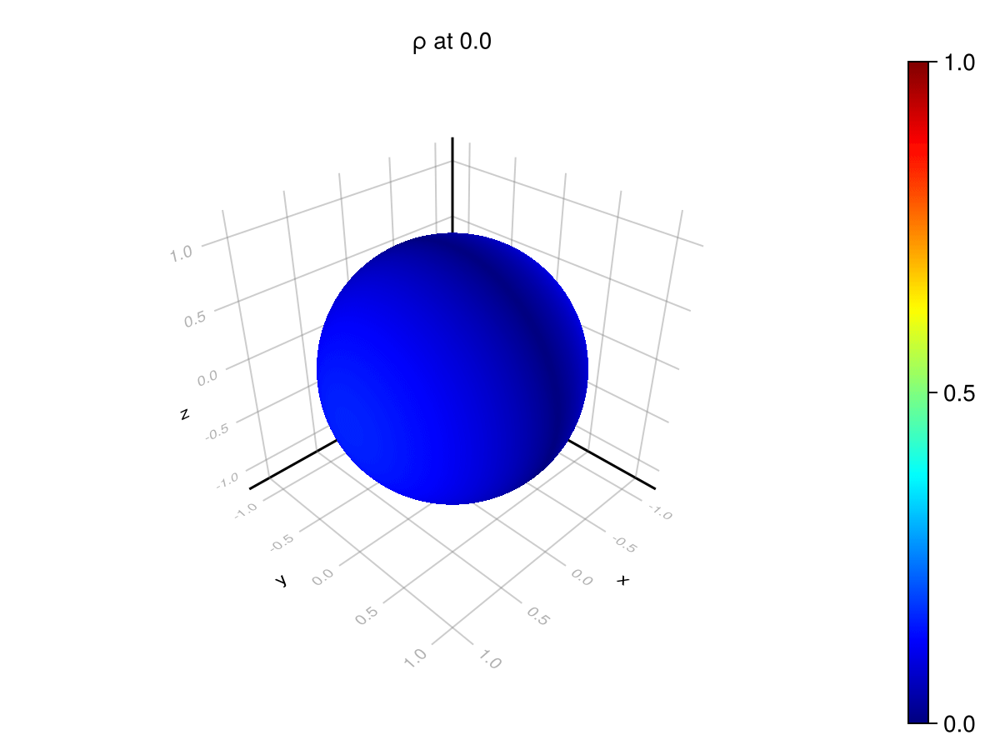

using Catlab, CombinatorialSpaces, Decapodes, DiagrammaticEquations
using CairoMakie, ComponentArrays, LinearAlgebra, MLStyle, ComponentArrays
using OrdinaryDiffEq
using GeometryBasics: Point3
Point3D = Point3{Float64}
using Arpack
Let's specify physics
Fokker_Planck = @decapode begin
(ρ,Ψ)::Form0
β⁻¹::Constant
∂ₜ(ρ) == ∘(⋆,d,⋆)(d(Ψ)∧ρ) + β⁻¹*Δ(ρ)
end
DiagrammaticEquations.decapodeacset.SummationDecapode{Any, Any, Symbol} {Var:9, TVar:1, Op1:4, Op2:2, Σ:1, Summand:2, Type:0, Operator:0, Name:0}
| 1 |
Form0 |
ρ |
| 2 |
Form0 |
Ψ |
| 3 |
Constant |
β⁻¹ |
| 4 |
infer |
ρ̇ |
| 5 |
infer |
•2 |
| 6 |
infer |
•3 |
| 7 |
infer |
•4 |
| 8 |
infer |
•5 |
| 9 |
infer |
•6 |
| 1 |
1 |
4 |
∂ₜ |
| 2 |
2 |
7 |
d |
| 3 |
6 |
5 |
[:⋆, :d, :⋆] |
| 4 |
1 |
9 |
Δ |
Specify the domain
spheremesh = loadmesh(Icosphere(6))
dualmesh = EmbeddedDeltaDualComplex2D{Bool, Float64, Point3D}(spheremesh);
subdivide_duals!(dualmesh, Barycenter())
Compile the simulation
simulation = eval(gensim(Fokker_Planck))
f = simulation(dualmesh, nothing)
f (generic function with 1 method)
Specify initial conditions. Ψ must be a smooth function. Choose an interesting eigenfunction. We require that ρ integrated over the surface is 1, since it is a PDF. On a sphere where ρ(x,y,z) is proportional to the x-coordinate, that means divide by 2π.
Δ0 = Δ(0, dualmesh)
Ψ = real.(eigs(Δ0, nev=32, which=:LR)[2][:,32])
ρ = map(point(dualmesh)) do (x,y,z)
abs(x)
end / 2π
10242-element Vector{Float64}:
0.0
0.11516563149298982
0.043988514743502356
0.14235231725145778
0.043988514743502356
0.11516563149298982
0.043988514743502356
0.11516563149298982
0.11516563149298982
0.043988514743502356
⋮
0.08967283264868502
0.09289301071025216
0.09592698073957182
0.09877362334453003
0.10143374486690382
0.10391019121884734
0.1062071174321057
0.10833040505846418
0.11028673250511124
Let's define the structures which hold the constants and state variables for the simulation, respectively.
constants_and_parameters = (β⁻¹ = 1e-2,)
u0 = ComponentArray(Ψ=Ψ, ρ=ρ)
ComponentVector{Float64}(Ψ = [-0.014767176073247151, -0.021254817916177407, -0.002199396534142845, 0.015417913776797092, 0.0049649765489798905, -0.01807347952794369, -0.005240979698638205, 0.017900344319327324, 0.021317872221042942, 0.0024402094972116573 … -0.005018729121602234, -0.007544813798633723, -0.010054521178813778, -0.012466447931988374, -0.014710154265368466, -0.01672859907892381, -0.018479063758613214, -0.019933354607810684, -0.021076591573677313, -0.02190610182310223], ρ = [0.0, 0.11516563149298982, 0.043988514743502356, 0.14235231725145778, 0.043988514743502356, 0.11516563149298982, 0.043988514743502356, 0.11516563149298982, 0.11516563149298982, 0.043988514743502356 … 0.08627041185913856, 0.08967283264868502, 0.09289301071025216, 0.09592698073957182, 0.09877362334453003, 0.10143374486690382, 0.10391019121884734, 0.1062071174321057, 0.10833040505846418, 0.11028673250511124])
Run the simulation.
tₑ= 20.0
problem = ODEProblem(f, u0, (0, tₑ), constants_and_parameters);
solution = solve(problem, Tsit5(), progress=true, progress_steps=1);
retcode: Success
Interpolation: specialized 4th order "free" interpolation
t: 434-element Vector{Float64}:
0.0
0.040156034184406865
0.061784016411814455
0.10596477933783693
0.1471221958911109
0.20967779018574145
0.2815541615897263
0.351641576414614
0.410115438927934
0.45878248667555405
⋮
19.65802317470215
19.704214154826396
19.750405130021935
19.796596100288774
19.842787069147413
19.888978033429396
19.93516899665523
19.981359959176963
20.0
u: 434-element Vector{ComponentArrays.ComponentVector{Float64, Vector{Float64}, Tuple{ComponentArrays.Axis{(Ψ = ViewAxis(1:10242, Shaped1DAxis((10242,))), ρ = ViewAxis(10243:20484, Shaped1DAxis((10242,))))}}}}:
ComponentVector{Float64}(Ψ = [-0.014767176073247151, -0.021254817916177407, -0.002199396534142845, 0.015417913776797092, 0.0049649765489798905, -0.01807347952794369, -0.005240979698638205, 0.017900344319327324, 0.021317872221042942, 0.0024402094972116573 … -0.005018729121602234, -0.007544813798633723, -0.010054521178813778, -0.012466447931988374, -0.014710154265368466, -0.01672859907892381, -0.018479063758613214, -0.019933354607810684, -0.021076591573677313, -0.02190610182310223], ρ = [0.0, 0.11516563149298982, 0.043988514743502356, 0.14235231725145778, 0.043988514743502356, 0.11516563149298982, 0.043988514743502356, 0.11516563149298982, 0.11516563149298982, 0.043988514743502356 … 0.08627041185913856, 0.08967283264868502, 0.09289301071025216, 0.09592698073957182, 0.09877362334453003, 0.10143374486690382, 0.10391019121884734, 0.1062071174321057, 0.10833040505846418, 0.11028673250511124])
ComponentVector{Float64}(Ψ = [-0.014767176073247151, -0.021254817916177407, -0.002199396534142845, 0.015417913776797092, 0.0049649765489798905, -0.01807347952794369, -0.005240979698638205, 0.017900344319327324, 0.021317872221042942, 0.0024402094972116573 … -0.005018729121602234, -0.007544813798633723, -0.010054521178813778, -0.012466447931988374, -0.014710154265368466, -0.01672859907892381, -0.018479063758613214, -0.019933354607810684, -0.021076591573677313, -0.02190610182310223], ρ = [0.002991550680587947, 0.11818351775972631, 0.043651103623424066, 0.13927438339013196, 0.0432642034695462, 0.11772137531665566, 0.044646003884341125, 0.11248229943095553, 0.11201338710774748, 0.044225724334347676 … 0.08657986270352803, 0.09028309817444388, 0.09382886783138143, 0.09720076834719878, 0.10038501644790725, 0.10337030066370884, 0.10614888355215986, 0.10871596349342459, 0.11107074076149354, 0.1132155567555648])
ComponentVector{Float64}(Ψ = [-0.014767176073247151, -0.021254817916177407, -0.002199396534142845, 0.015417913776797092, 0.0049649765489798905, -0.01807347952794369, -0.005240979698638205, 0.017900344319327324, 0.021317872221042942, 0.0024402094972116573 … -0.005018729121602234, -0.007544813798633723, -0.010054521178813778, -0.012466447931988374, -0.014710154265368466, -0.01672859907892381, -0.018479063758613214, -0.019933354607810684, -0.021076591573677313, -0.02190610182310223], ρ = [0.0039985432157654405, 0.11981554923935014, 0.043475263130737386, 0.1377481026942888, 0.042883808611668746, 0.11910003977516943, 0.044984436439556005, 0.11107581936710789, 0.1103653572863149, 0.04433947589495407 … 0.08673717499765504, 0.09060056650928096, 0.09432108196547423, 0.09787573058938678, 0.10124384059549636, 0.10440737246080208, 0.10735248226317609, 0.1100691516423211, 0.11255254107846013, 0.11480232850136352])
ComponentVector{Float64}(Ψ = [-0.014767176073247151, -0.021254817916177407, -0.002199396534142845, 0.015417913776797092, 0.0049649765489798905, -0.01807347952794369, -0.005240979698638205, 0.017900344319327324, 0.021317872221042942, 0.0024402094972116573 … -0.005018729121602234, -0.007544813798633723, -0.010054521178813778, -0.012466447931988374, -0.014710154265368466, -0.01672859907892381, -0.018479063758613214, -0.019933354607810684, -0.021076591573677313, -0.02190610182310223], ρ = [0.0055802052928031545, 0.123162042523609, 0.04312918401912028, 0.13479175861144577, 0.04212836428367181, 0.12191971556833564, 0.04564204743398, 0.10828438923657752, 0.1071033121094673, 0.04454212895072889 … 0.08703899217886242, 0.09122538277977237, 0.09530119709077693, 0.09923033309062901, 0.10297798731334228, 0.10651194761995951, 0.1098051268002184, 0.11283596028474002, 0.11559038472420145, 0.11806131858472985])
ComponentVector{Float64}(Ψ = [-0.014767176073247151, -0.021254817916177407, -0.002199396534142845, 0.015417913776797092, 0.0049649765489798905, -0.01807347952794369, -0.005240979698638205, 0.017900344319327324, 0.021317872221042942, 0.0024402094972116573 … -0.005018729121602234, -0.007544813798633723, -0.010054521178813778, -0.012466447931988374, -0.014710154265368466, -0.01672859907892381, -0.018479063758613214, -0.019933354607810684, -0.021076591573677313, -0.02190610182310223], ρ = [0.006832191802001091, 0.12629447961305196, 0.04281198912425188, 0.13215977589989772, 0.04143971183795958, 0.12455038750392654, 0.04622398357019826, 0.1057728914699391, 0.10417936832970416, 0.04470531178431961 … 0.08729739778774334, 0.09177955363968346, 0.09618403143000463, 0.10046300021898587, 0.10456849775720081, 0.10845464978132958, 0.11208117807125761, 0.11541468470354797, 0.11843129054148886, 0.12111649397135588])
ComponentVector{Float64}(Ψ = [-0.014767176073247151, -0.021254817916177407, -0.002199396534142845, 0.015417913776797092, 0.0049649765489798905, -0.01807347952794369, -0.005240979698638205, 0.017900344319327324, 0.021317872221042942, 0.0024402094972116573 … -0.005018729121602234, -0.007544813798633723, -0.010054521178813778, -0.012466447931988374, -0.014710154265368466, -0.01672859907892381, -0.018479063758613214, -0.019933354607810684, -0.021076591573677313, -0.02190610182310223], ρ = [0.008531475693138927, 0.13107721799912012, 0.04234144321579607, 0.12833685406017067, 0.04042283657646461, 0.12855178496286954, 0.047051993982938585, 0.10211231434456905, 0.09993670562446125, 0.04490748612440479 … 0.08765008443950516, 0.09257210719936132, 0.0974711669211745, 0.10228261624205136, 0.10693867052976176, 0.11137200855950137, 0.11552087433491387, 0.11933194138841903, 0.12276428617640338, 0.12579005756389214])
ComponentVector{Float64}(Ψ = [-0.014767176073247151, -0.021254817916177407, -0.002199396534142845, 0.015417913776797092, 0.0049649765489798905, -0.01807347952794369, -0.005240979698638205, 0.017900344319327324, 0.021317872221042942, 0.0024402094972116573 … -0.005018729121602234, -0.007544813798633723, -0.010054521178813778, -0.012466447931988374, -0.014710154265368466, -0.01672859907892381, -0.018479063758613214, -0.019933354607810684, -0.021076591573677313, -0.02190610182310223], ρ = [0.010300977157981808, 0.13659048651842495, 0.04184846696635582, 0.12418104803881029, 0.03933057075453893, 0.1331431938969818, 0.047897340585188304, 0.09814422354757411, 0.09536229604576148, 0.045051195627435814 … 0.0879989318686102, 0.09341175539699487, 0.09887072644605374, 0.10429351700275909, 0.10959007619641875, 0.1146677010790651, 0.11943807974874614, 0.12382219746866101, 0.12775698580299866, 0.13119431554939692])
ComponentVector{Float64}(Ψ = [-0.014767176073247151, -0.021254817916177407, -0.002199396534142845, 0.015417913776797092, 0.0049649765489798905, -0.01807347952794369, -0.005240979698638205, 0.017900344319327324, 0.021317872221042942, 0.0024402094972116573 … -0.005018729121602234, -0.007544813798633723, -0.010054521178813778, -0.012466447931988374, -0.014710154265368466, -0.01672859907892381, -0.018479063758613214, -0.019933354607810684, -0.021076591573677313, -0.02190610182310223], ρ = [0.011794211800133, 0.14190616868113265, 0.04184923860572681, 0.12043502118222285, 0.03880474419826967, 0.13755241580543992, 0.048248221167923294, 0.09478777478205888, 0.09148978028800811, 0.04472965614388933 … 0.08828475459523558, 0.09416102346538867, 0.10015640332941128, 0.10617311982804074, 0.11210016880314613, 0.11781963296296494, 0.12321575183730661, 0.1281807798049021, 0.1326341156492567, 0.13647533568023612])
ComponentVector{Float64}(Ψ = [-0.014767176073247151, -0.021254817916177407, -0.002199396534142845, 0.015417913776797092, 0.0049649765489798905, -0.01807347952794369, -0.005240979698638205, 0.017900344319327324, 0.021317872221042942, 0.0024402094972116573 … -0.005018729121602234, -0.007544813798633723, -0.010054521178813778, -0.012466447931988374, -0.014710154265368466, -0.01672859907892381, -0.018479063758613214, -0.019933354607810684, -0.021076591573677313, -0.02190610182310223], ρ = [0.0129038867978685, 0.14612514225453044, 0.04329655090929494, 0.11756669370881177, 0.03994512970817452, 0.14104421825430283, 0.04727084153367875, 0.0931160063142788, 0.08948982634650504, 0.04315919171310595 … 0.08848476272054266, 0.09473626609440881, 0.10117138686266273, 0.10768086017298532, 0.11413690419439144, 0.12040040805438257, 0.12633196501196783, 0.13179473032031552, 0.13671248006072492, 0.1408503673729707])
ComponentVector{Float64}(Ψ = [-0.014767176073247151, -0.021254817916177407, -0.002199396534142845, 0.015417913776797092, 0.0049649765489798905, -0.01807347952794369, -0.005240979698638205, 0.017900344319327324, 0.021317872221042942, 0.0024402094972116573 … -0.005018729121602234, -0.007544813798633723, -0.010054521178813778, -0.012466447931988374, -0.014710154265368466, -0.01672859907892381, -0.018479063758613214, -0.019933354607810684, -0.021076591573677313, -0.02190610182310223], ρ = [0.01411871182002112, 0.14974997333139525, 0.04381720690234021, 0.11503947468781459, 0.04019101838003489, 0.14402961705606124, 0.047031759351903756, 0.09140277975761954, 0.0875107921177734, 0.04242770136424231 … 0.08862606814416017, 0.09518201234355345, 0.10197745874651504, 0.10889455387300948, 0.11579211066711614, 0.1225133669643223, 0.128898456418066, 0.13478700081338904, 0.1400936012461597, 0.14451782369157445])
⋮
ComponentVector{Float64}(Ψ = [-0.014767176073247151, -0.021254817916177407, -0.002199396534142845, 0.015417913776797092, 0.0049649765489798905, -0.01807347952794369, -0.005240979698638205, 0.017900344319327324, 0.021317872221042942, 0.0024402094972116573 … -0.005018729121602234, -0.007544813798633723, -0.010054521178813778, -0.012466447931988374, -0.014710154265368466, -0.01672859907892381, -0.018479063758613214, -0.019933354607810684, -0.021076591573677313, -0.02190610182310223], ρ = [0.1694274823759443, 0.39914712711288564, 0.06314333781499913, 0.014038504750827149, 0.030752903993166346, 0.3301841927077406, 0.055521975791445514, 0.010710207147097651, 0.007460122558505416, 0.03082103188282384 … 0.075246819137963, 0.09753826299011528, 0.1261121612762708, 0.16134230662966392, 0.20283139614591622, 0.24916452833577168, 0.29784772006354704, 0.34552850111338806, 0.38846859392848215, 0.4231909903548748])
ComponentVector{Float64}(Ψ = [-0.014767176073247151, -0.021254817916177407, -0.002199396534142845, 0.015417913776797092, 0.0049649765489798905, -0.01807347952794369, -0.005240979698638205, 0.017900344319327324, 0.021317872221042942, 0.0024402094972116573 … -0.005018729121602234, -0.007544813798633723, -0.010054521178813778, -0.012466447931988374, -0.014710154265368466, -0.01672859907892381, -0.018479063758613214, -0.019933354607810684, -0.021076591573677313, -0.02190610182310223], ρ = [0.1695126433783547, 0.39916280551918326, 0.06315683755386613, 0.014028095777587164, 0.030759944612018208, 0.330160268283385, 0.055552644303856244, 0.010707473307784569, 0.007457928288915796, 0.030838357880571522 … 0.07525810627535928, 0.0975519028869662, 0.12612861931476635, 0.16136193114644443, 0.20285431205857082, 0.2491905350624927, 0.29787622494034793, 0.3455585217662545, 0.3884988394026149, 0.42322001452823726])
ComponentVector{Float64}(Ψ = [-0.014767176073247151, -0.021254817916177407, -0.002199396534142845, 0.015417913776797092, 0.0049649765489798905, -0.01807347952794369, -0.005240979698638205, 0.017900344319327324, 0.021317872221042942, 0.0024402094972116573 … -0.005018729121602234, -0.007544813798633723, -0.010054521178813778, -0.012466447931988374, -0.014710154265368466, -0.01672859907892381, -0.018479063758613214, -0.019933354607810684, -0.021076591573677313, -0.02190610182310223], ρ = [0.16959758770666156, 0.39917847023855946, 0.06317022708038879, 0.014017748030093662, 0.03076693443707283, 0.3301363659248675, 0.05558330689434652, 0.010704749970000404, 0.007455736135218602, 0.030855685867641737 … 0.07526936841967813, 0.0975655063264292, 0.12614502701529282, 0.16138148965943103, 0.202877145787018, 0.24921644479412464, 0.29790462165827325, 0.34558842898576864, 0.38852897377924583, 0.42324893831042426])
ComponentVector{Float64}(Ψ = [-0.014767176073247151, -0.021254817916177407, -0.002199396534142845, 0.015417913776797092, 0.0049649765489798905, -0.01807347952794369, -0.005240979698638205, 0.017900344319327324, 0.021317872221042942, 0.0024402094972116573 … -0.005018729121602234, -0.007544813798633723, -0.010054521178813778, -0.012466447931988374, -0.014710154265368466, -0.01672859907892381, -0.018479063758613214, -0.019933354607810684, -0.021076591573677313, -0.02190610182310223], ρ = [0.16968231685563004, 0.39919412179749225, 0.06318350725206634, 0.014007460989806531, 0.03077387384662034, 0.33011248617640326, 0.05561396332759928, 0.010702037030716498, 0.007453546073183312, 0.030873015540089817 … 0.0752806055466276, 0.09757907340197368, 0.1261613846238749, 0.16140098259973687, 0.202899897970614, 0.24924225838417033, 0.29793291126708676, 0.34561822397362113, 0.3885589983437699, 0.4232777629864496])
ComponentVector{Float64}(Ψ = [-0.014767176073247151, -0.021254817916177407, -0.002199396534142845, 0.015417913776797092, 0.0049649765489798905, -0.01807347952794369, -0.005240979698638205, 0.017900344319327324, 0.021317872221042942, 0.0024402094972116573 … -0.005018729121602234, -0.007544813798633723, -0.010054521178813778, -0.012466447931988374, -0.014710154265368466, -0.01672859907892381, -0.018479063758613214, -0.019933354607810684, -0.021076591573677313, -0.02190610182310223], ρ = [0.16976683230804718, 0.39920976071038894, 0.06319667892023406, 0.013997234142838511, 0.030780763216504397, 0.3300886295679645, 0.055644613373039865, 0.010699334410886724, 0.007451358190422512, 0.0308903465985457 … 0.07529181763518401, 0.09759260420904299, 0.12617769238670026, 0.1614204103962766, 0.20292256924365862, 0.24926797667788378, 0.2979610948050379, 0.345647907916986, 0.3885889143646736, 0.4233064898229189])
ComponentVector{Float64}(Ψ = [-0.014767176073247151, -0.021254817916177407, -0.002199396534142845, 0.015417913776797092, 0.0049649765489798905, -0.01807347952794369, -0.005240979698638205, 0.017900344319327324, 0.021317872221042942, 0.0024402094972116573 … -0.005018729121602234, -0.007544813798633723, -0.010054521178813778, -0.012466447931988374, -0.014710154265368466, -0.01672859907892381, -0.018479063758613214, -0.019933354607810684, -0.021076591573677313, -0.02190610182310223], ρ = [0.16985113551628864, 0.39922538747638026, 0.06320974292720892, 0.01398706698215227, 0.03078760291860012, 0.3300647966207773, 0.055675256798037066, 0.010696641991046559, 0.007449172364191815, 0.030907678744360314 … 0.07530300466506253, 0.09760609884203125, 0.1261939505465088, 0.1614397734715051, 0.20294516023046408, 0.24929360050671906, 0.29798917329282243, 0.3456774819822052, 0.38861872308721335, 0.42333512006201124])
ComponentVector{Float64}(Ψ = [-0.014767176073247151, -0.021254817916177407, -0.002199396534142845, 0.015417913776797092, 0.0049649765489798905, -0.01807347952794369, -0.005240979698638205, 0.017900344319327324, 0.021317872221042942, 0.0024402094972116573 … -0.005018729121602234, -0.007544813798633723, -0.010054521178813778, -0.012466447931988374, -0.014710154265368466, -0.01672859907892381, -0.018479063758613214, -0.019933354607810684, -0.021076591573677313, -0.02190610182310223], ρ = [0.16993522792705223, 0.399241002584108, 0.06322270011016867, 0.013976959004533097, 0.030794393322857973, 0.33004098784063474, 0.05570589337675627, 0.010693959695547465, 0.007446988683519542, 0.030925011684577286 … 0.07531416661991487, 0.09761955739817152, 0.12621015934731417, 0.1614590722470782, 0.20296767155200407, 0.24931913069591236, 0.29801714774193716, 0.3457069473236326, 0.3886484257423767, 0.4233636549301212])
ComponentVector{Float64}(Ψ = [-0.014767176073247151, -0.021254817916177407, -0.002199396534142845, 0.015417913776797092, 0.0049649765489798905, -0.01807347952794369, -0.005240979698638205, 0.017900344319327324, 0.021317872221042942, 0.0024402094972116573 … -0.005018729121602234, -0.007544813798633723, -0.010054521178813778, -0.012466447931988374, -0.014710154265368466, -0.01672859907892381, -0.018479063758613214, -0.019933354607810684, -0.021076591573677313, -0.02190610182310223], ρ = [0.1700191109635759, 0.39925660650863565, 0.06323555129840518, 0.013966909712705339, 0.030801134795838913, 0.33001720372321, 0.05573652288359561, 0.010691287430456393, 0.007444807138135772, 0.030942345128211552 … 0.07532530348488808, 0.09763297997462028, 0.12622631903092255, 0.16147830713974287, 0.20299010382115507, 0.24934456805912986, 0.29804501914885506, 0.345736305077542, 0.3886780235407874, 0.4233920956320554])
ComponentVector{Float64}(Ψ = [-0.014767176073247151, -0.021254817916177407, -0.002199396534142845, 0.015417913776797092, 0.0049649765489798905, -0.01807347952794369, -0.005240979698638205, 0.017900344319327324, 0.021317872221042942, 0.0024402094972116573 … -0.005018729121602234, -0.007544813798633723, -0.010054521178813778, -0.012466447931988374, -0.014710154265368466, -0.01672859907892381, -0.018479063758613214, -0.019933354607810684, -0.021076591573677313, -0.02190610182310223], ρ = [0.17005290240405627, 0.3992629003020032, 0.06324070697748277, 0.013962870898734546, 0.030803831990731455, 0.33000761290303554, 0.055748881186618165, 0.010655690482672552, 0.007269659110381651, 0.030949345137175902 … 0.07532979058084727, 0.09763838639471609, 0.12623282630350707, 0.1614860512491492, 0.2029991339575679, 0.24935480702463061, 0.2980562375033942, 0.3457481219809954, 0.38868993810230257, 0.42340354628130733])
Verify that the probability distribbution function is still a probability distribution. We'll show that the sum of the values on the dual 2-form integrate (sum to) unity,
s0 = dec_hodge_star(0, dualmesh)
@info sum(s0 * solution(tₑ).ρ)
@info any(solution(tₑ).ρ .≤ 0)
[ Info: 0.9996960076315163
[ Info: false
Now we will create a GIF.
function save_gif(file_name, soln)
time = Observable(0.0)
fig = Figure()
Label(fig[1, 1, Top()], @lift("ρ at $($time)"), padding = (0, 0, 5, 0))
ax = LScene(fig[1,1], scenekw=(lights=[],))
msh = CairoMakie.mesh!(ax, spheremesh,
color=@lift(soln($time).ρ),
colorrange=(0,1),
colormap=:jet)
Colorbar(fig[1,2], msh)
frames = range(0.0, tₑ; length=21)
record(fig, file_name, frames; framerate = 10) do t
time[] = t
end
end
gif = save_gif("fokker_planck.gif", solution)
"fokker_planck.gif"
